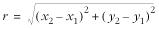
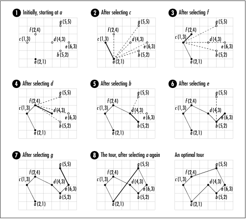

16.8 Description of the
Traveling-Salesman Problem
Imagine a salesman who needs to
visit a number of cities as part of the route he works. His
goal is to travel the shortest possible distance while
visiting every city exactly once before returning to the point
at which he starts. This is the idea behind the traveling-salesman problem.
In a graph, a tour in which we visit every
other vertex exactly once before returning to the vertex at
which we started is called a hamiltonian cycle. To solve the
traveling-salesman problem, we use a graph G = (V, E )
as a model and look for the hamiltonian cycle with the
shortest length. G is a
complete, undirected, weighted graph, wherein V is a set of vertices representing
the points we wish to visit and E is a set of edges representing
connections between the points. Each edge in E is weighted by the distance between
the vertices that define it. Since G is complete and undirected, E contains V (V -
1)/2 edges.
One way to solve the traveling-salesman
problem is by exploring all possible permutations of the
vertices in G. Using this
approach, since each permutation represents one possible tour,
we simply determine which one results in the tour that is the
shortest. Unfortunately, this approach is not at all practical
because it does not run in polynomial time. A polynomial-time
algorithm is one whose complexity is
less than or equal to O (nk),
where k is some constant. This
approach does not run in polynomial time because for a set of
V vertices, there are V ! possible permutations; thus,
exploring them all requires O
(V !) time, where V ! is
the factorial of V, which is
the product of all numbers from V down to 1.
In general, nonpolynomial-time algorithms are
avoided because even for small inputs, problems quickly become
intractable. Actually, the traveling-salesman problem is a
special type of nonpolynomial-time problem called NP-complete. NP-complete problems are those for which no polynomial-time
algorithms are known, but for which no proof refutes the
possibility either; even so, the likelihood of finding such an
algorithm is extremely slim. With this in mind, normally the
traveling-salesman problem is solved using an
approximation algorithm (see Chapter
1).
16.8.1 Applying the
Nearest-Neighbor Heuristic
One way to
compute an approximate traveling-salesman tour is to apply the
nearest-neighbor heuristic. This works as follows. We begin with a
tour consisting of only the vertex at the start of the tour.
We color this vertex black. All other vertices are white until
added to the tour, at which point we color them black as well.
Next, for each vertex v not
already in the tour, we compute a weight for the edge between
the last vertex u added to the
tour and v. Recall that the
weight of an edge from u to
v in the traveling-salesman
problem is the distance between u and v. We compute this using the
coordinates of the points that each vertex represents. The
distance r between two points
(x1, y1) and (x2, y2) is defined by the
formula:

Using this formula, we select the vertex
closest to u, color it black,
and add it to the tour. We then repeat this process until all
vertices have been colored black. At this point, we add the
start vertex to the tour again to form a complete cycle.
Figure
16.6 illustrates a solution to the traveling-salesman
problem using the nearest-neighbor heuristic. Normally when a
graph is drawn for the traveling-salesman problem, the edges
connecting every vertex to each other are not explicitly shown
since the edges are understood. In the figure, each vertex is
displayed along with the coordinates of the point it
represents. The dashed lines at each stage show the edges
whose distances are being compared. The darkest line is the
edge added to the tour. The tour obtained using the
nearest-neighbor heuristic has a length of 15.95. The optimal
tour has a length of 14.71, which is about 8% shorter.

The nearest-neighbor heuristic has some
interesting properties. Like the other algorithms in this
chapter, it resembles breadth-first search because it explores
all of the vertices adjacent to the last vertex in the tour
before exploring deeper in the graph. The heuristic is also
greedy because each time it adds a vertex to the tour, it does
so based on which looks best at the moment. Unfortunately, the
nearest neighbor added at one point may affect the tour in a
negative way later. Nevertheless, the heuristic always returns
a tour whose length is within a factor of 2 of the optimal
tour length, and in many cases it does better than this. Other
techniques exist to improve a tour once we have computed it.
One technique is to apply an exchange
heuristic (see the related topics at the end of the chapter).
|